This codelab is focused on WebRTC Apps.
What is WebRTC?
WebRTC is
WebRTC's Mission is to
|

WebRTC Official Definitions:
- WebRTC: "A framework, protocols and application programming interface that provide real time interactive voice, video and data in web browsers and other applications"
- WebRTC is a free, open project that provides browsers and mobile applications with Real-Time Communications (RTC) capabilities via simple APIs. The WebRTC components have been optimized to best serve this purpose
- Mission: To enable rich, high-quality RTC applications to be developed for the browser, mobile platforms, and IoT devices, and allow them all to communicate via a common set of protocols
The WebRTC Project
- Web: https://webrtc.org
- WebRTC Project Logo: https://webrtc.org/press/
This c0d3l4b
This codelab will walk you through creating your first WebRTC App, providing the theory needed to understand the JS API and protocols running under the hood , design considerations, as well as all implementation details, to ensure that your app works properly in every network conditions and environment.
What you'll learn
- How to design a WebRTC App
- How to use the basic WebRTC API-s
- How to access a MediaDevice. e.g. How to access your WebCam's VideoStream.
- How to set mediaStream Input and Output devices
- How to setup a PeerConnection (PC)
- How to setup PC for proper NAT Traversal
- How to use a DataChannel (DC)
- How to record a MediaStream locally
What you'll need
- A recent version of Chrome and Firefox Browser.
(Note, this should work in other browsers as well.) - The CodeLab Samples
- A text editor
- SSH client
- Basic knowledge of HTML, CSS, JavaScript.
Setup a web server with TLS to support https
- even on your host: Install on your host your favorite web server with a certificate from let's encrypt.
- Or as an easy alternative: If you use chrome you could also use web-server-for-chrome extension: Install Web Server for Chrome
You could Download the Sample Code
Click the following link to download all the code for this codelab:
Or
git clone https://github.com/misi/codelab.git
Unpack the zip file in your web server root directory. This will unpack a root folder (codelab), which contains one lab<N> folder for each step of this codelab, along with all of the resources you will need. It also contains this codelab web part.
The lab<N> folders contain the desired end state of each step of this codelab. They are there for reference. We'll be doing all our coding work in a directory called work.
Ready? => Let's start the theory lesson!
WebRTC is complex and could be hard to understand for a web developer at the first sight without proper understanding of the WebRTC Architecture (technologies working under the hood), therefore we try to give you an overview about such Concepts and Architectures.
Goals
- Easy to use, Out of the box experience for the end user (Without Plugins, Without Install, Always up2date client)
- Multi platform (Even exotic platforms (Linux, BSD))
- Push the envelope: Improved Standards like Advanced congestion avoidance, Adaptive Audio Video encoding and Forward Error Correction (FEC) to reach Reliability, Fair Share Low Delay/Latency, Low Jitter. Advanced Noise suppression and echo cancellation etc.
- Firewall and NAT Traversal ICE(STUN/TURN)
- Focus on Security and Privacy and Identity validation by design. Encrypted Secure End to End communication, User consent before access any MediaDevice(WebCam) to avoid any fingerprinting (as possible)
- Open Source Native Implementation (for browser vendors and beyond browsers)
- Open Standard (W3C, IETF)
- Interwork with any Signaling
- Backward compatibility in WebRTC 1.0 (e.g. Offer/Answer, SDP, G.711 audio codec, DTMF)
Base components:
- GetUserMedia (GuM): Grab MediaStream from a MediaDevice
- PeerConnection (PC): Establish and Maintain Peer to Peer Media Connection
- DataChannel(DC): P2P Data connection on top of PeerConnection
Standardization bodies
|
|
| 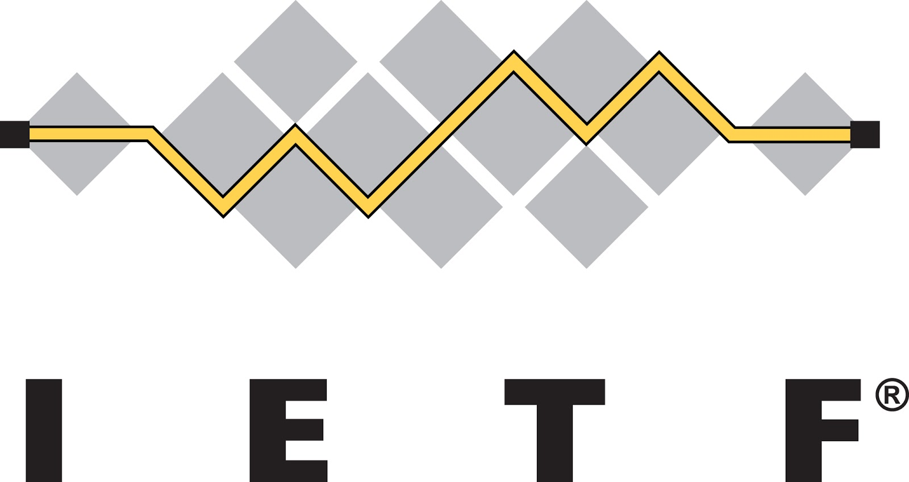 |

WebRTC 1.0
- W3C WebRTC Working Group
- IETF rtcweb, rmcat, mmusic, avtcore, ice, tram, perc Working Groups
WebRTC NV (In progress)
- QUIC transport for DataChannel/(Media?)
- More ORTC like deeper API
- No more Session Description Protocol (SDP)
- More control on ICE Agent
- Scalable Video Codec (SVC)

From mediacapture spec:
- The MediaStreamTrack object represents media of a single type that originates from one media source in the User Agent, e.g. video produced by a web camera. A MediaStream is used to group several MediaStreamTrack objects into one unit that can be recorded or rendered in a media element."
- All tracks in a MediaStream are intended to be synchronized when rendered. Different MediaStream objects do not need to be synchronized.
- A single MediaStreamTrack can represent multi-channel content, such as stereo or 5.1 audio or stereoscopic video, where the channels have a well defined relationship to each other. Information about channels might be exposed through other APIs, such as [WEBAUDIO].
Codecs
Mandatory to Implement Audio codec
- G711 (backward compatibility)
- Opus (48 kHz: fullband codec, both for music and speech)
Mandatory to Implement Video codecs
It took a long time to reach consensus in the IETF RTCWEB workgroup ("Codec war..")
- VP8 vs H.264
- (VP9 vs H.265)
Alliance for Open Media
- AOMedia Video 1 (AV1) development
- Amazon, Cisco, Google, Intel, Microsoft, Mozilla, Netflix, etc.

The beginning
- 2009 - Google Chrome Team Idea
- 2010 Summer - IETF 98 Informal lunch (Google, Microsoft, Apple, Mozilla, Skype, Ericsson,etc.)
- 2010 October - RTC Web Workshop http://rtc-web.alvestrand.com/
- 2011 January - Google Global IP Solution (GIPS) acquired
- 2011 May - W3C WebRTC WG started officially
- 2011 June - Googe Announce WebRTC project(based on GIPS) and chrome integration
- 2011 Nov - Chrome 23 WebRTC support
Early birds
- 2013 January - Firefox 20 first WebRTC support (only GuM)
- 2013 February - Chrome Mozilla first call interoperability
- 2013 July - Chrome for Android support
- 2013 September - Firefox for Android support
- 2013 October - Open H.264 Cisco (Mozilla)
- 2013 October - Opera 18 Beta WebRTC debut
Onboarding on webRTC train
- 2014 September - OpenWebRTC (Ericsson)
- 2014 October - Microsoft Edge ORTC Announcement
- 2014 November - Consensus on Mandatory to Implement Video Codecs :-)
- 2015 September - Microsoft Edge ORTC/WebRTC support
- 2015 November - Mozilla Canvas CaptureStream
- 2016 January - VP9 Chrome
- 2016 April - ICE Restart Firefox 48
Nowadays
- 2017 June - Safari 11 WebRTC Support
- 2017 October - KITE WebRTC platform test
- 2017 October - Third Party Audio Codec Support
- 2017 November - WebRTC PeerConnection CR (W3C)
Duration: 5:00

Image Source: http://art.fritsahlefeldt.com/photo/2414/Mind-the-gap-with-text-Color-illustration.html
Adapter.js
Standardization is a moving target!
To build world consensus takes time. :-) Webrtc 1.0 standardization has started in 2011, and it still has not reached the Draft Recommendation status. Hopefully, it will reach in Q4 2018 (according the current roadmap). Standard is moving target, and implementation fall behind the standardization and Web Application based on it may also fall behind the implementation. All in all, some glue/shim layer is needed.
Mind the gap between
- Standard and Browser Implementations
- Between bowser and browser implementations
- Application and Standard
The adapter.js is a shim to insulate apps from spec changes and prefix differences.
(Prefixes: moz, webkit)
Breaking Changes
- Chrome and Firefox adds deprecation warnings
- Carefully age out, pull down not too soon
Changes
- Async API => Move from callbacks, forward to Promises
Media Capture Changes:
MediaDevice selection, detection on changes (discovery)
- Old:
navigator.getUserMediais deprecated - New:
navigator.mediaDevices.getUserMedia
Media source
- Old:
video.createObjectURLis deprecated - New:
video.srcObject
Constraint changed
Legacy deprecated Constraint
{
mandatory: {
width: { min: 640, max:1920 }
},
optional: [{ width: 1280 }]
}New modern Constraint
{width: { min:1024, ideal: 1280, max: 1920 }}- Chrome constraints are deprecated
- "optional" renamed to "advanced"
Stats Changes
Legacy deprecated Stats
pc.getStats(function(stats){
Object.keys(stats).forEach(key =>...)
}
)New modern Stats (promise)
pc.getStats().then(stats =>stats.forEach(value=>...)Streams => Tracks
Manipulating (replacing tracks) after added a stream to peerconnection makes confusion, so add tracks instead of streams to peerconnection.
addStream is deprecated
- Old:
pc.addStream(stream) - New:
stream.forEach(track => pc.addTrack(track,stream))
getLocalStreams is deprecated
- Old:
var streams = pc.getLocalStreams(); - New:
var senders = pc.getSenders();
Protocol Stack
WebRTC supports both IPv4 and IPv6 protocol. ICE helps in the smooth transition.
For the Real Time Communication the UDP transport is more ideal than TCP, but it could fallback to TCP.
On top of this transport layer, the STUN helps in NAT/Firewall traversal. The other protocols, like SRTP and DTLS provides the end-to-end encrypted communication channel. SRTP for media, and DTLS for SRTP keying and Data. SCTP on top of it provides multiple flows, and configurable reliability and delivery parameters.
Please notice that WebRTC intention is to happen all communication in encrypted form, and so encryption is mandatory on media and data channel(SRTP/DTLS).

Image Source: https://commons.wikimedia.org/wiki/File:Media-exchange-for-WebRTC.svg
WebRTC native Architecture

Image Source: https://webrtc.org/architecture/
WebRTC Trapezoid
Direct Peer to Peer Connection

(For simplification on the picture above the WebServer contains the signaling server too!)
Address and Port-Dependent Mapping & Address and Port-Dependent Filtering (Symmetric) NAT

(For simplification on the picture above the WebServer contains the signaling server too!)
Mainly because usage of Network Address Translation(NAT) and Packet Filters made difficult (or impossible) the direct Peer to Peer communication. As we will see in the next step, Interactive Connection Establishment protocol (ICE) has been designed to solve these problems.
Firewall / Packet Filter
For Media communication the Real-time Transport Protocol(RTP) use random port numbers. We need to find a ip:port pair that is not filtered between the two peers. ICE have to run 2 way checks on the candidate pairs, on the "5 Tuple" transport connections, to make sure that the communication channel has established and working properly. The transport connection needs to work properly before any Real-time communication could be started on top of it.
Network Address Translation(NAT)
In this section we focus on NAT. Let's look it little bit closer.
The NAT behavior standardization started much later than the first NAT implementation existed. NAT traversal is complex. It is confusing mainly because of the so big variety of different NAT behaviors and types. ICE have to deal with any topology, and so any types and levels of NATs!
NAT Behaviors / Types
RFC 3489
The RFC 3489, also known as "classic STUN" defined four NAT types
- Full Cone
- Restricted Cone
- Port Restricted Conde
RFC 4787 NAT behavioral Requirements for UDP
RFC 4787 defined much much more fine grained classification of NATs.
RFC 4787 main class definitions:
Mapping
- Endpoint Independent Mapping
- Address-Dependent Mapping
- Address and Port-Dependent Mapping
Filtering
- Endpoint Independent Filtering
- Address-Dependent Filtering
- Address and Port-Dependent Filtering
And it defines much more NAT behaviors too.
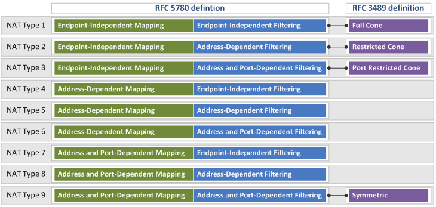
Image Source: https://www.netmanias.com/en/?m=view&id=techdocs&no=6065
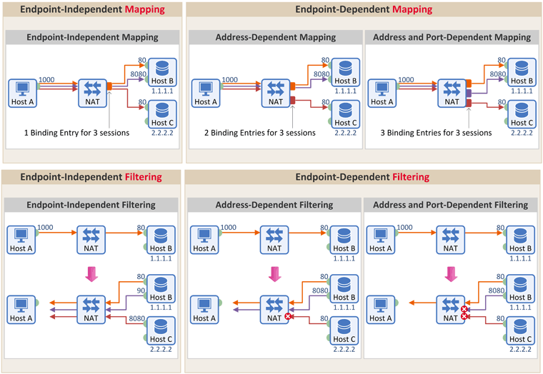
Image Source: https://www.netmanias.com/ko/?m=view&id=blog&no=6263
NAT Behavior Discovery (RFC5780)
RFC5780 is a STUN protocol extension.
Mapping Discovery
- TEST I (Primary IP, Primary Port)
- TEST II (Alternate IP, Primary Port)
- TEST III (Alternate IP, Alternate Port)
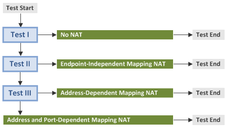
Image Source: http://www.netmanias.com/en/post/techdocs/6067/nat-stun/nat-behavior-discovery-using-stun-rfc-5780
Filtering
- TEST I (Primary IP, Primary Port)
- TEST II (Change Request IP and Port)
- TEST III (Change Request Port)
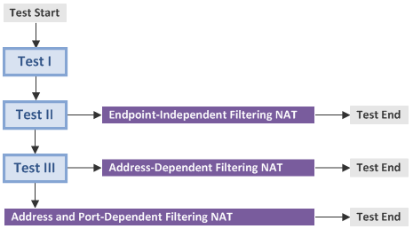
Image Source: http://www.netmanias.com/en/post/techdocs/6067/nat-stun/nat-behavior-discovery-using-stun-rfc-5780
coTURN natdiscovery utility

$ turnutils_natdiscovery -f -m rfc5780.turn.geant.org ... ======================================== NAT with Address and Port Dependent Mapping! ======================================== ... ======================================== NAT with Address and Port Dependent Filtering! ======================================== $
NAT discovery in browser:
We reuse the same idea here that we used earlier in RFC 5780 NAT behavior discovery.
If a NAT translates traffic originating from the same internal port to different external source ports, because of the different destination ip:port (in our case different destination STUN servers), then
It could be:
- Address Dependent Mapping
- Address and Port Dependent Mapping
See WebRTC h4cks article about howto discover a symmetric NAT:
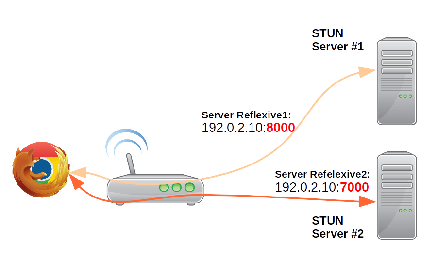
NAT behaviors in the real-world
I have collected the NAT behaviors in the following table. In this table you could find OS/vendors/appliances, and the default NAT behavior that belongs to it. Furthermore you could find the options that could be used to modify the default behavior.
(These are only my experiences and test results according my actual knowledge. Please correct me if you think I am wrong!)
Vendor/Behavior | EIM/EIF | EIM/ADF | EIM/APDF | APDM/APDF |
Linux / Netfilter (Campus) | X | X | Default | --random --random-fully |
BSD /PF (Campus) | X | X | static-port | Default |
Juniper (Campus) | persistent-nat | persistent-nat target-host | persistent-nat target-host-port | Default |
Cisco ios (Campus) | X | X | Default | X |
Checkpoint 21400 (Campus) | X | X | X | Default |
TP-Link (SOHO) | X | X | Default | X |
Mikrotik RouterBOARD (SOHO) | X | X | Default | X |
Lede 17.0.2 Linux (SOHO) | X | X | Default | --random --random-fully |
PF-Sense BSD (SOHO) | X | X | static-port | Default |
Win 10 Pro (Internet Sharing) | Default | X | X | X |
macOS (Internet Sharing) | Default | X | X | X |
iOS (Internet Sharing) | X | X | Default | X |
Android (Internet Sharing) | X | X | Default | X |
To clarify further the options in the table above with an example:
In Linux case, the Netfilter‘s (iptables) default behavior is Endpoint Independent Mapping with Address and Port Dependent Filtering (EIM/APDF)
iptables -t nat -A POSTROUTING -o eth0 -j MASQUERADE
If you use --random or --random-fully option, then you could change NAT behavior to Address and Port dependent Mapping with Address and Port dependent Filtering (APDM/APDF)
iptables -t nat -A POSTROUTING -o eth0 -j MASQUERADE --random
Port Randomization
Why port randomization? It is proposed solutions to e.g. DNS cache poisoning / Kaminsky dns vulnerability.
The 5 tuple (source and destination ip port and transport protocol) Transport-Protocol Port Randomization is recommended according RFC 6056.
And RFC 7857 updates to Network Address Translation (NAT) Behavioral Requirements according it.
(But even port randomization could be derandomized with fine grained attacks: https://arxiv.org/pdf/1205.5190.pdf. To avoid Kaminsky DNS vulnerability the safe way to use DNSSEC.)
Summary of NAT behaviors
According my experiences
- Campus/Enterprise NATs most commonly use Port Randomization with Address and Port dependent Mapping with Address and Port dependent Filtering
- SOHO NATs most commonly use Endpoint Independent Mapping with Address and Port Dependent Filtering
TL;DR
- STUN is a binary protocol
- STUN Discover Client global IP:port
- TURN is a STUN protocol extension
- TURN is about Allocate a global IP:port and tunnel and Relay traffic
- ICE finds the shortest working path between two ICE agents
STUN/TURN
STUN - Binding:

TURN - Allocate
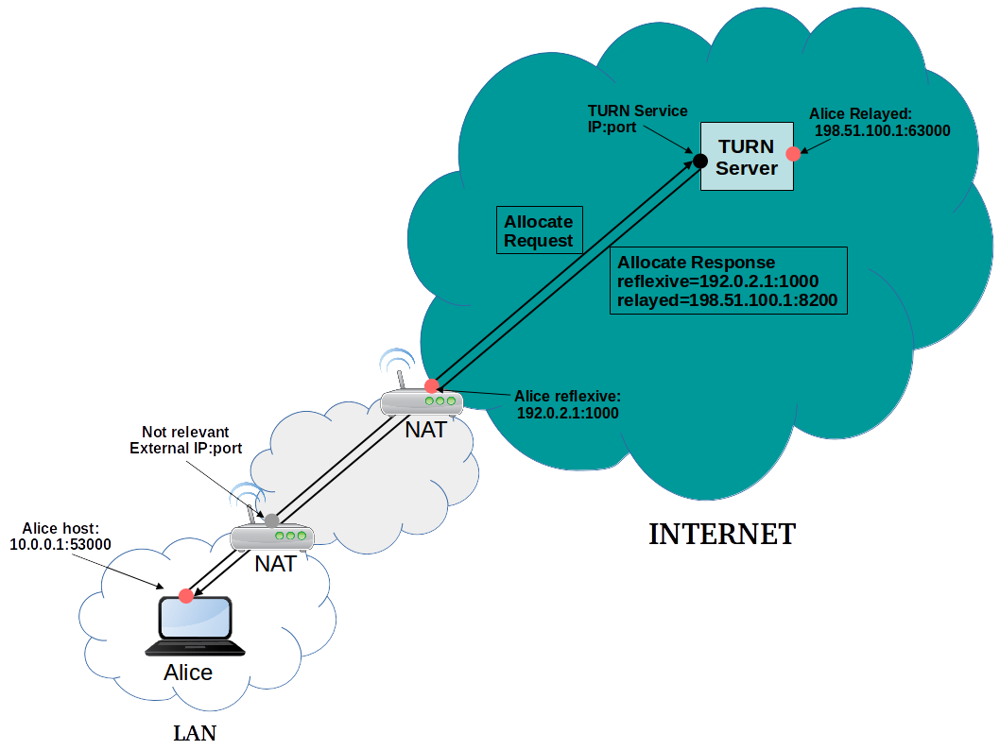
ICE
Design Goals
- High reliability is essential during connection establishments
- Minimize the "length" of the path between clients
- Negotiate IP protocol version (IPv4/IPV6) and preference
- No assumption on: (Network topologies, NAT or Firewall presence, NAT behaviours)
ICE Steps
- Discovery and Candidate gathering (Allocation)
- Prioritisation
- Eliminating redundant candidates
- Exchange (SDP)
- Connectivity Check (Binding Request + Short Term Credential)
- Coordination (Controlling/Controlled, Nomination)
- Communication
Discovery Candidates
- Multiple interfaces
- Multiple type of interface (WIFI, Mobile, LAN, VPN)
- Multiple protocols (IPv4, IPv6)
ICE prioritization
priority = (2^24)*(type preference)
+(2^8)*(local preference)
+(2^0)*(256 - component ID) priority (32bit)
- Type preference (8 bit): 0-126 The RECOMMENDED values are 126 for
hostcandidates, 100 forserver reflexivecandidates, 110 forpeer reflexivecandidates, and 0 forrelayedcandidates. - Local preference(16 bit): Version(IPv4/IPv6), network interfaces(VPN/LAN)
- Component ID (8 bit) 256 - component ID
ICE User Agent (UA) Role
- Controlling
- Controlled
The Controlling is the one that's sent the initial Offer. (In case of both agents are a full
implementation).
Pair priority formula
Let
- G the controlling priority (Offer)
- D the controlled priority (Answer)
pair priority = 2^32*MIN(G,D) + 2*MAX(G,D) + (G>D?1:0)Foundation
Candidates has the same foundation and are similar when they are of the same type and obtained from the same interface and STUN or TURN server.
Frozen Algorithm
The idea is to use the results of a previous check to predict the likelihood of a future one working.
ICE Agent States

For more details please see the ICE tutorials mentioned above.
Trickle ICE
Connection establishment time could be long if we need to wait to finish the candidate discovery.
Even worse, in case of any error is occuring during the discovery. Waiting for the timeouts could take long, and could cause an unacceptable very long connection establishment.
Establish connection faster
The primary idea behind it is to start ICE check as fast as we can, as soon as we discover a candidate. The only drawback is that we need to send more signaling messages. WebRTC Application nowadays use mostly Trickle ICE to establish connection.
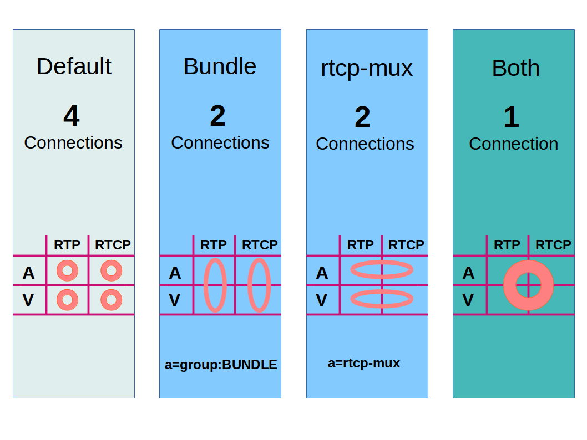
To reduce the number of connections, and so the call establishment time, the WebRTC could use two optimization:
- RTP/RTCP multiplex
a=group:BUNDLE foo bar
RFC5761/ RFC8035 - Bundle RTP (multiplex rtp streams e.g. audio+video)
a=group:BUNDLE foo bar
https://tools.ietf.org/html/draft-ietf-mmusic-sdp-bundle-negotiation-47
SDP example
v=0
o=alice 2890844526 2890844526 IN IP4 atlanta.example.com
s=
c=IN IP4 atlanta.example.com
t=0 0
a=group:BUNDLE foo bar
m=audio 10000 RTP/AVP 0 8 97
b=AS:200
a=mid:foo
a=rtcp-mux
a=rtpmap:0 PCMU/8000
a=rtpmap:8 PCMA/8000
a=rtpmap:97 iLBC/8000
a=extmap 1 urn:ietf:params:rtp-hdrext:sdes:mid
m=video 10002 RTP/AVP 31 32
b=AS:1000
a=mid:bar
a=rtcp-mux
a=rtpmap:31 H261/90000
a=rtpmap:32 MPV/90000
a=extmap 1 urn:ietf:params:rtp-hdrext:sdes:midIt is very important part of WebRTC to use an intelligent congestion control algorithm, that estimates the maximum bandwidth and share the available bandwidth fairly.
Standardization happens in IETF RMCAT working group
- Receiver Estimated Maximum Bandwidth (REMB)
- Sender Side Bandwidth Estimation
- Forward Error Correction (FEC)
More Details:
Duration: 10 min
Plans
Unified Plan:
- https://webrtcglossary.com/unified-plan
- https://tools.ietf.org/html/draft-roach-mmusic-unified-plan-00
Plan B: (Obsoleted!)
- https://webrtcglossary.com/unified-plan
- https://tools.ietf.org/html/draft-uberti-rtcweb-plan-00
- Chrome / Chromium is still working the transition to Unified Plan https://bugs.chromium.org/p/chromium/issues/detail?id=465349
Example SDP
Offer
v=0
o=mozilla...THIS_IS_SDPARTA-58.0.2 1392930692610468855 0 IN IP4 0.0.0.0
s=-
t=0 0
a=sendrecv
a=fingerprint:sha-256 97:73:D6:F9:B8:4C:4A:29:3B:E0:B4:3E:E6:37:F6:D0:B7:8A:88:D9:E5:D2:C4:F8:74:66:18:B7:84:18:BB:42
a=group:BUNDLE sdparta_0 sdparta_1
a=ice-options:trickle
a=msid-semantic:WMS *
m=audio 51644 UDP/TLS/RTP/SAVPF 109 9 0 8 101
c=IN IP4 193.224.69.74
a=candidate:0 1 UDP 2122252543 192.0.2.1 53693 typ host
a=candidate:4 1 TCP 2105524479 192.0.2.1 9 typ host tcptype active
a=candidate:0 2 UDP 2122252542 192.0.2.1 40157 typ host
a=candidate:4 2 TCP 2105524478 192.0.2.1 9 typ host tcptype active
a=candidate:3 1 UDP 92217087 193.224.69.74 51644 typ relay raddr 193.224.69.74 rport 51644
a=candidate:3 2 UDP 92217086 193.224.69.74 64126 typ relay raddr 193.224.69.74 rport 64126
a=sendrecv
a=end-of-candidates
a=extmap:1/sendonly urn:ietf:params:rtp-hdrext:ssrc-audio-level
a=extmap:2 urn:ietf:params:rtp-hdrext:sdes:mid
a=fmtp:109 maxplaybackrate=48000;stereo=1;useinbandfec=1
a=fmtp:101 0-15
a=ice-pwd:957d8d9d754992a1d5a7706d5cb2e1fe
a=ice-ufrag:732f8881
a=mid:sdparta_0
a=msid:{69779578-0a01-46d5-afb8-c1ce8eb8b4f7} {3b93eb2f-9bf4-4955-95d0-5379eeba3e11}
a=rtcp:64126 IN IP4 193.224.69.74
a=rtcp-mux
a=rtpmap:109 opus/48000/2
a=rtpmap:9 G722/8000/1
a=rtpmap:0 PCMU/8000
a=rtpmap:8 PCMA/8000
a=rtpmap:101 telephone-event/8000
a=setup:actpass
a=ssrc:2764815782 cname:{08b8c6e5-8963-4a02-825f-d55ddb7076ba}
m=video 51644 UDP/TLS/RTP/SAVPF 120 121 126 97
c=IN IP4 193.224.69.74
a=candidate:0 1 UDP 2122252543 192.0.2.1 55556 typ host
a=candidate:4 1 TCP 2105524479 192.0.2.1 9 typ host tcptype active
a=candidate:0 2 UDP 2122252542 192.0.2.1 42946 typ host
a=candidate:4 2 TCP 2105524478 192.0.2.1 9 typ host tcptype active
a=candidate:3 1 UDP 92217087 193.224.69.74 52200 typ relay raddr 193.224.69.74 rport 52200
a=candidate:3 2 UDP 92217086 193.224.69.74 65354 typ relay raddr 193.224.69.74 rport 65354
a=sendrecv
a=extmap:1 http://www.webrtc.org/experiments/rtp-hdrext/abs-send-time
a=extmap:2 urn:ietf:params:rtp-hdrext:toffset
a=extmap:3 urn:ietf:params:rtp-hdrext:sdes:mid
a=fmtp:126 profile-level-id=42e01f;level-asymmetry-allowed=1;packetization-mode=1
a=fmtp:97 profile-level-id=42e01f;level-asymmetry-allowed=1
a=fmtp:120 max-fs=12288;max-fr=60
a=fmtp:121 max-fs=12288;max-fr=60
a=ice-pwd:957d8d9d754992a1d5a7706d5cb2e1fe
a=ice-ufrag:732f8881
a=mid:sdparta_1
a=msid:{69779578-0a01-46d5-afb8-c1ce8eb8b4f7} {c4e521ab-ac5c-468d-bda4-102fa8c63ad1}
a=rtcp:65354 IN IP4 193.224.69.74
a=rtcp-fb:120 nack
a=rtcp-fb:120 nack pli
a=rtcp-fb:120 ccm fir
a=rtcp-fb:120 goog-remb
a=rtcp-fb:121 nack
a=rtcp-fb:121 nack pli
a=rtcp-fb:121 ccm fir
a=rtcp-fb:121 goog-remb
a=rtcp-fb:126 nack
a=rtcp-fb:126 nack pli
a=rtcp-fb:126 ccm fir
a=rtcp-fb:126 goog-remb
a=rtcp-fb:97 nack
a=rtcp-fb:97 nack pli
a=rtcp-fb:97 ccm fir
a=rtcp-fb:97 goog-remb
a=rtcp-mux
a=rtpmap:120 VP8/90000
a=rtpmap:121 VP9/90000
a=rtpmap:126 H264/90000
a=rtpmap:97 H264/90000
a=setup:actpass
a=ssrc:1307424569 cname:{08b8c6e5-8963-4a02-825f-d55ddb7076ba}Answer
v=0
o=mozilla...THIS_IS_SDPARTA-58.0.2 8465178051030770266 0 IN IP4 0.0.0.0
s=-
t=0 0
a=sendrecv
a=fingerprint:sha-256 F7:8B:D4:93:EC:66:10:17:A7:88:E2:DB:E2:02:D8:A8:0E:78:0C:47:D1:CF:AC:A8:4A:7F:B0:F8:9C:22:54:DD
a=group:BUNDLE sdparta_0 sdparta_1
a=ice-options:trickle
a=msid-semantic:WMS *
m=audio 9 UDP/TLS/RTP/SAVPF 109 101
c=IN IP4 0.0.0.0
a=candidate:0 1 UDP 2122252543 198.51.100.65 39578 typ host
a=candidate:4 1 UDP 2122187007 198.51.100.177 34202 typ host
a=candidate:8 1 TCP 2105524479 198.51.100.65 9 typ host tcptype active
a=candidate:9 1 TCP 2105458943 198.51.100.177 9 typ host tcptype active
a=candidate:3 1 UDP 92217087 193.224.69.74 55675 typ relay raddr 193.224.69.74 rport 55675
a=sendrecv
a=extmap:2 urn:ietf:params:rtp-hdrext:sdes:mid
a=fmtp:109 maxplaybackrate=48000;stereo=1;useinbandfec=1
a=fmtp:101 0-15
a=ice-pwd:36acccb528a6c8502e42656cc6c7b8cd
a=ice-ufrag:14888916
a=mid:sdparta_0
a=msid:{9cc1f70c-c78b-44b4-86fa-fcd82c530b1e} {4662f9ed-4a45-4f9f-964d-4ffff5535e5f}
a=rtcp-mux
a=rtpmap:109 opus/48000/2
a=rtpmap:101 telephone-event/8000
a=setup:active
a=ssrc:1899896363 cname:{0cc05c74-02a9-4474-9885-9ea7674b8299}
m=video 9 UDP/TLS/RTP/SAVPF 120
c=IN IP4 0.0.0.0
a=sendrecv
a=extmap:1 http://www.webrtc.org/experiments/rtp-hdrext/abs-send-time
a=extmap:2 urn:ietf:params:rtp-hdrext:toffset
a=extmap:3 urn:ietf:params:rtp-hdrext:sdes:mid
a=fmtp:120 max-fs=12288;max-fr=60
a=ice-pwd:36acccb528a6c8502e42656cc6c7b8cd
a=ice-ufrag:14888916
a=mid:sdparta_1
a=msid:{9cc1f70c-c78b-44b4-86fa-fcd82c530b1e} {425480c1-460a-4b92-8b43-59cc59062d0d}
a=rtcp-fb:120 nack
a=rtcp-fb:120 nack pli
a=rtcp-fb:120 ccm fir
a=rtcp-fb:120 goog-remb
a=rtcp-mux
a=rtpmap:120 VP8/90000
a=setup:active
a=ssrc:377924797 cname:{0cc05c74-02a9-4474-9885-9ea7674b8299}WebRTC Offer/Answer Model
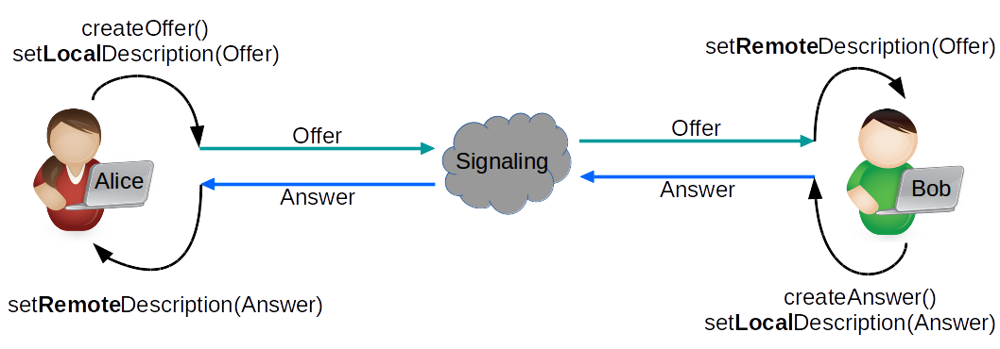
PeerConnection States

GetUserMedia
- Secure User Interface opt-in (e.g. Camera, audio access)
- User can allow/deny audio video source usage
Offer Answer without Identity Check
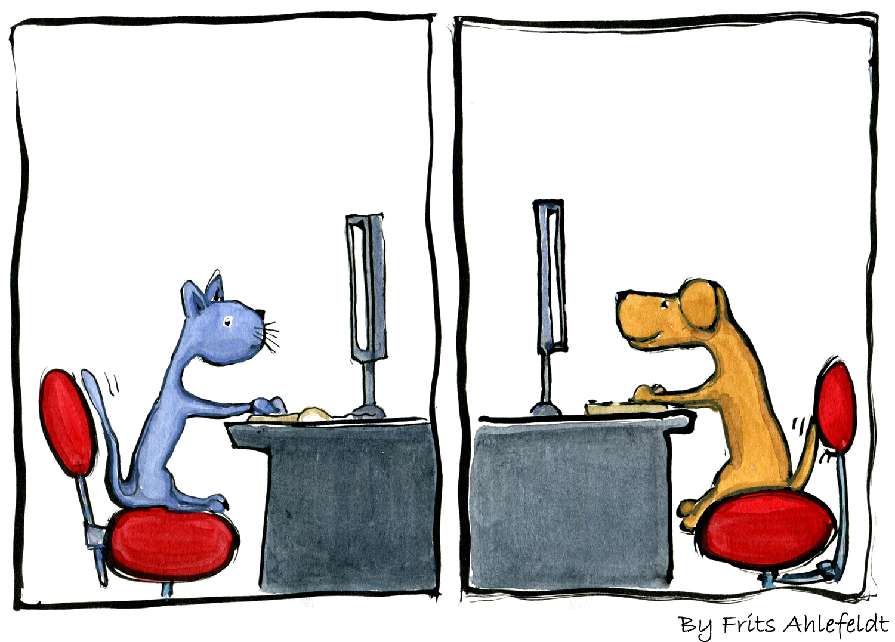
Image Source: https://hikingartist.com/2012/01/03/cat-and-dog-online-2-0/
Offer Answer with Identity Check
The trust base is the Browser.
+----------------+ Unspecified +----------------+
| | protocol | |
| Signaling |<----------------->| Signaling |
| Server | (SIP, XMPP, ...) | Server |
| | | |
+----------------+ +----------------+
^ ^
| |
HTTPS | | HTTPS
| |
| |
v v
JS API JS API
+-----------+ +-----------+
| | Media | |
Alice | Browser |<--------------------------->| Browser | Bob
| | DTLS+SRTP | |
+-----------+ +-----------+
^ ^--+ +--^ ^
| | | |
v | | v
+-----------+ | | +-----------+
| |<-------------------------+ | |
| IdP1 | | | IdP2 |
| | +------------------------>| |
+-----------+ +-----------+
A federated call with IdP-based identity
The following two slides are from EKR IETF Presentation mentioned above
Offer + Identity

Answer + Identity

Media/Data Encryption is mandatory: SRTP / DTLS
- DTLS-SRTP: DTLS and Certificate based key.
- SDES-SRTP "MUST NOT implement" according IETF 87
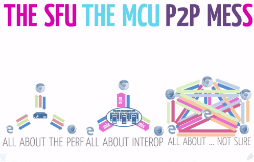
Image Source: Emil Ivov (Jitsi /Atlassian)
Topologies
Topologies could vary and follow the Star or Mesh or a mixed (e.g. interconnected stars, etc.) topology patterns.
Multipoint
Communication between multiple (more than two) parties could be done in many different ways, each of them has different pros and contras and neither fits to all possible scenarios, so there is no ultimate best choice. You should choose that one, that fits the best to your Application usage, or maybe you should use a mix of them.
P2P / Full Mesh
Strength
- Security: Identities could be validated and so media source could validated in a cryptographic way. And of course media is encrypted between the peers
- The most direct communication (probably with the best latency)
- Simple P2P topology: No central media server needed
- Flexible Video layouts on client side
- Following the internet principle, to keep the most intelligence and load on edge of the network
Weakness
- Does not scale for a large conference N * (N-1) connection
- Multiple stream (May drain your Mobile's battery fast.)
Mixer / MCU
Multipoint Control Unit (MCU)
Strength
- Interoperability: Interworking, Transcoding between different codecs, DTMF inband/signaling etc.
- Best interoperability with legacy systems
- 1 stream received (Draining slower your Mobile battery. Especially if mobile supports only 1 HW video en/de-coding.)
- Composed Video Stream Recording on Server Side
Weakness
- CPU intensive: decrypt + decode + compose + encode + encrypt
- Transcoding/Size/Compose takes time and adds latency
- Central huge CPU/GPU capacity is needed (Scaling?)
- Video Image composed in central point , may limited layouts or interaction
- Media is decrypted on Server side. We have to trust in a central component. (Possible leak.)
- More complex than the P2P communication, because a Central component is needed
SFU
Selective Forwarding Unit (SFU)
Used usually with Simulcast or Scalable Video Codec.
Strength
- Could scale for large conference participants
- Could be used for low latency video streaming
- Server Side Recording possible but needs post processing
Weakness
- Less CPU load (only decrypt + encrypt)
- Media is decrypted on Server side. We have to trust in a central component. (Possible leak.)
- More complex than the P2P communication, because a Central component is needed
Some example open source projects:
ScreenShare
Screen Sharing is about to capture and grab your entire screen, or just one window, or application video stream. You could grab this MediaStream using special mediaConstraints, but using the same GuM function that we used for capturing webcam (or other video source), so navigator.mediaDevices.getUserMedia(mediaConstraints).
You could find the videTrack in this Stream that represents the Video that the user want to share. And we could add this video track to the PeerConnection. We could share it parallel to the other streams.
Security
Be aware that ScreenSharing is violating the "Same-Origin" Web principle, and this way use it with care. According the mentioned risk, Chrome web browser made the design decision to allow only screensharing from a Chrome extension. Take it seriously, to share only if you fully trust the site. For more details read:
Chrome Screen Share extension:
Chrome extension gives the best user experience with inline install. Installation of the extension is offered by the browser easily, with only one click.
Example extension:
Read more about inline install
Mozilla / Firefox
It supports screensharing without plugins or extension.
(Earlier it was needed for a web site that want to use screensharing to be listed on a central whitelist, but it is no longer needed.)
Implemented Spec:
Example constraints:
Screen
mediaConstraints = {
video: {
mediaSource: "screen"
},
};Window
mediaConstraints = {
video: {
mediaSource: "window"
}
};Application
mediaConstraints = {
video: {
mediaSource: "application"
}
};Standard
Standard without implementation
The most of the normal Web Communication happens through the Client- Server model. You may ask if we have already for data communication WebSocket, AJAX etc. protocols, then why should we add again a new protocol?
The main difference is that the WebRTC Data API is Peer-to-Peer / Client-to-Client and not Client - Server!
The Data(Channel) API lets a web application send and receive generic application data in Peer-to-Peer(P2P) fashion. DataChannel represents a bi-directional communication channel between the two peers.
API
Init options:
const dcInitOptions = {
ordered: true,
maxRetransmits: 65535,
//maxPacketLifeTime: 65535,
priority: "low",
binaryType: "blob",
};Create dataCahnnel (local)
var dc = pc.createDataChannel("chat",dcInitOptions);OnDataChannel (remote)
pc.ondatachannel = function(event) {
dc=event.channel;
};Send
dc.send($data);Receive
dc.onmessage = function(event) {
//event.data
};Transport
At the time of writing this document the WebRTC Data API implementations use SCTP over DTLS as the transport protocol. If we look forward, then we can see that QUIC seems to be the next general transport protocol that will be implemented, and because it contains all benefits that SCTP has (and even more), it could be in longer term the successor of the data transport. /Just for the correct history: during the early days of WebRTC there was also an implementation option in Chrome, to transport Data over RTP (RtpDataChannels)/.
Establishment
The establishment of the DataChannel could happen two ways.
- Through out-of-band way
In this case asymmetric connection properties could be used. The datachannel objects should be created on both side and Id's are negotiated out-of-band. - Through an in-band, auto negotiated way (default)
In this case if an established PeerConnnection creating a new datachannel, then with in-band auto-negotiation on remote peer side automatically a new DataChannel object will be created with symmetric properties and with the same DataChannel ID.
Operation types of the connection
- Different priority (
DataChannelPriority) - Ordering (Ordered/Unordered)
ordered - Reliability modes /Reliable/Unreliable/ (
MaxPacketLifeTime, MaxRetransmits)
Only one of these options could be used at the same time, and can not be used both simultaneously!
Usage
It could be used perfectly for real time text or binary Data exchange, e.g chat or file share, gaming, etc.
Furthermore some Applications (because of privacy concerns) could also use it for signaling. After the very first offer-answer exchange, and so the PeerConnection establishment, it could be used for handling any further signaling communication.
Image Source: http://art.fritsahlefeldt.com/photo/2045/Goal-is-closer-than-you-think-Color-illustration.html
WebRTC 1.0 is stable to build reliable service on it.
- Strong and wide community
- Fast New market
- 3,5-4 Billion of potential Browsers
- More than 1300+ Vendor and Project based on WebRTC
- Wide support in browsers: Chrome,Firefox, Opera, Edge, Safari, etc.
WebRTC - Next Version (NV)
Actual Focus is on finishing 1.0 and only after it move forward to WebRTC-NV.
What you'll learn
- Get a MediaStream from your WebCam (promise)
- MediaStream and MediaStreamTrack differences
- How a browser asks for consent to access your (Web)Camera
- Manipulate the video with CSS
Lab1
You could find this simple sample code in Lab1 directory
HTML Skeleton with an autoplay Video tag
<!DOCTYPE html>
<html>
<head>
<meta charset="utf-8">
<meta name="viewport" content="width=device-width, initial-scale=1">
<title>WebRTC CodeLab</title>
<link rel="stylesheet" href="css/main.css" />
<link rel="icon" href="img/favicon-flask.ico" type="image/x-icon">
<script src="https://cdnjs.cloudflare.com/ajax/libs/webrtc-adapter/6.1.0/adapter.js" defer></script>
<script src="js/main.js" defer></script>
</head>
<body>
<h1>WebRTC CodeLab</h1>
<video autoplay></video>
</body>
</html>JavaScript
See: js/main.js
// Strict mode changes previously accepted "bad syntax" into real errors.
'use strict';
const mediaStreamConstraints = {
video: true,
};
var myStream;
navigator.mediaDevices.getUserMedia(mediaStreamConstraints)
.then(function(mediaStream) {
/* use the stream */
myStream=mediaStream;
var video = document.querySelector('video');
video.srcObject = mediaStream;
})
.catch(function(err) {
/* handle the error */
console.error(err);
});Manipulate with css
main.css
video {
filter:saturate(8) opacity(70%);
}Bonus exercises:
- Try to use instead of
<video autoplay>in index.html a Java Script in main.jsvideo.onloadedmetadata= (e) => {e.target.play();} - Try out on browser JS dev console:
myStream.getVideoTracks()myStream.getAudioTracks() myStream.getTracks()[0] - Try to stop track
myStream.getTracks()[0].stop - Try out to add audio to constraint
const mediaStreamConstraints = {audio:true, video: true}; - Get Video width:
document.querySelector('video').videoWidth - Set video
widthandmax-width
What you'll learn
- Find out the supported media constraints
- Constraint sets Basic/Required and Advanced
- Media Constraints values: difference between
min,max,exact, andideal - Rejected promises (e.g. with
OverconstrainedError)
Lab2
You could find the completed Lab in Lab2 directory. Play with the constraints (that are supported by browser) and try to add low and high values.
Check the lab JS code and try to modify it, and experience how video change according the constraint change. Start playing with the width and height.
Supported Constraints
Get the supported constraints list, that the browser supports.
var supportedConstraints = navigator.mediaDevices.getSupportedConstraints();Constraints
Basic/Required, Advanced Constraint list
- Basic/Required is a ConstraintSet that the Browser MUST to restrict the settings of the corresponding constrainable properties to the specified values or ranges of values.
- Advanced: is the list of ConstraintSets that the Browser MUST attempt to satisfy, in order, skipping only those that cannot be satisfied. The order of these ConstraintSets is significant. The browser MUST try to satisfy them in the order that is specified.
Example:
var constraints = {
width: { min: 640, ideal: 1280 },
height: { min: 480, ideal: 720 },
advanced: [
{ width: 1920, height: 1280 },
{ aspectRatio: 1.3333333333 }
]
};In this example above, the browser
- prefers if possible prefers 1920x1280
- if it is not possible then if possible then it prefers the ascpectRatio 4/3
- But the Basic/Required constraints MUST be satisfied in all cases (width minimum 640, and height 480, with "gravity" to ideal width 1280 and ideal height 720).
Constraints Values
- Exact: The exact match of the value
- Min/Max: Specify a Range lower or higher barrier value
- Ideal: Ideal/prefered value, the browser tries to satisfy with some gravity to this value
Exact Ideal example:
var constraints = {
video: {
width: { exact: 640 },
height: { ideal: 480 }
}
}Further examples
Framerate
var constraints = {
video: {
frameRate: {
ideal: 10,
max: 15
}
}
};Facing mode
// "user" / "environment" ( / "left" / "right" )
var constraints = {
video: {
facingMode: "user"
}
};OverconstrainedError
If browser could not satisfy the constraints then promise is rejected with an Overconstrained error. This error object contains the reason.
E.g. Try to add to your constraint a width value that your WebCam is not supporting and see the results on your browser's developer console log.
Bonus Exercises
- Define an Constraint with advance constraintset with 1280x720 and 640x480
- See a video track Settings/Constraints/Capabilities
track=document.querySelector('video').srcObject.getTracks()[0];
track.getConstraints();
track.getCapabilities();
track.getSettings();What you'll learn
- Discovery available MediaDevices
- Select Input Audio/Video Device
- Select Output Audio Device
Lab3
You could find the completed Lab in Lab3 directory.
Select another input/output from the dropdown list to start media capture.
EnumarateDevices
Enumarate all Media Devices,and it is added as an option to one of the three dropdown select inputs
- Input Audio
- Input Video
- Output Audio
navigator.mediaDevices.enumerateDevices()
.then(function (devices){
console.log(devices);
devices.forEach(function(deviceInfo) {
var option = document.createElement('option');
option.value = deviceInfo.deviceId;
if (deviceInfo.kind === 'audioinput') {
option.text = deviceInfo.label ||
'Microphone ' + (audioInputSelect.length + 1);
audioInputSelect.appendChild(option);
} else if (deviceInfo.kind === 'audiooutput') {
option.text = deviceInfo.label || 'Speaker ' +
(audioOutputSelect.length + 1);
audioOutputSelect.appendChild(option);
} else if (deviceInfo.kind === 'videoinput') {
option.text = deviceInfo.label || 'Camera ' +
(videoInputSelect.length + 1);
videoInputSelect.appendChild(option);
}
});
})
.catch(errorCallback);Select Audio Output
Set output with function setSinkID(mediaDeviceID)
function outputSelected() {
var audioOutputId = audioOutputSelect.value;
video.setSinkId(audioOutputId);
};Select Audio/Video Input
We adjust the MediaConstraint, and set the deviceId as constraint to select the proper input device.
function inputSelected() {
if (window.mediaStream) {
let tracks = window.mediaStream.getTracks();
tracks.forEach(function(track) {
track.stop();
});
};
var audioInputId = audioInputSelect.value;
var videoInputId = videoInputSelect.value;
var mediaStreamConstraints = {
audio: { deviceId: audioInputId ? {exact: audioInputId } : undefined },
video: { deviceId: videoInputId ? {exact: videoInputId } : undefined }
};What you'll learn
- Detect supported recording formats
- Record a stream locally
- Playback recording and make available for download
Lab4
You could find the completed Lab in Lab4 directory.
It this lab there are 4 buttons and one dropdown select element.
- Use "GetuserMedia" button to start capturing your webCam MediaStream (give your consent to access webcam in the pop-up)
- Select from the dropdown the format you prefer for the recording. (Only the supported formats will be listed in this select input.)
- Use the "Start Recording" button and record your video message :-).
- "Stop Recording"
- Start "Replay" in another video element, and also add a Link where the recorded file could be downloaded.
MediaStream Recording API
Supported media recording formats
Create a dropdown list with the supported encoding format.
var types = ["video/webm\;codecs=vp9",
"video/webm\;codecs=vp8",
"video/webm\;codecs=daala",
"video/webm\;codecs=h264"];
for (var i in types) {
if (MediaRecorder.isTypeSupported(types[i])) {
console.log("Yes, \""+types[i] + "\" is probably supported..");
var option = document.createElement('option');
option.value = option.text = types[i];
formatSelect.appendChild(option);
} else {
console.log("Unfortunately \""+types[i] + "\" not yet supported. :(");
};
};Start/Stop Recording
We construct the MediaRecoderOption. In our example we use only the mimeType option, that's value is coming from the selected encoding format.
MediaRecorderOptions
- mimeType: The mime type you want to use as the recording container for the new MediaRecorder. The container and codec format(s) [RFC2046] for the recording, which may include any parameters that are defined for the format.
- audioBitsPerSecond: Aggregate target bits per second for encoding of the Audio track(s), if any.
- videoBitsPerSecond: Aggregate target bits per second for encoding of the Video track(s), if any.
- bitsPerSecond: Aggregate target bits per second for encoding of all Video and Audio Track(s) present
After local MediaStream is already captured, we start recording with create and start() MediaRecorderObject and stop() this object at the recording end.
var localStream;
var mediaRecorder;
var chunks = [];
//localStream set by getUserMedia
function record() {
formatSelect.disabled = true;
recordButton.disabled = true;
var mediaRecorderOptions = {};
mediaRecorderOptions.mimeType = formatSelect.value;
try {
mediaRecorder = new MediaRecorder(localStream, mediaRecorderOptions);
} catch (e) {
console.error("Error during mediarecorder creation using format(" + format + "): " + e);
alert("Error during mediarecorder creation using format(" + format + ")");
}
mediaRecorder.ondataavailable = dataAvailable;
mediaRecorder.start(25); // collect 25ms of data
stopButton.disabled = false;
};
function dataAvailable(e) {
chunks.push(e.data);
};
function stop() {
stopButton.disabled = true;
mediaRecorder.stop();
replayButton.disabled = false;
};Replay and Download
- We create from the recorded 25 Seconds long recorded chunks a Blob object.
- Get the URL from createObjectURL
- Set this URL as the source of
videoreplay element. - Create a link with the same URL and add this new anchor element to the document.
function replay() {
vod.controls = true;
var buffer = new Blob(chunks, {type: 'video/webm'});
var recordingUrl = window.URL.createObjectURL(buffer);
vod.src = recordingUrl;
//Add download link
var a = document.createElement('a');
var linkText = document.createTextNode("!!! Download Recording !!!");
a.appendChild(linkText);
a.href = recordingUrl;
a.title = "!!! Download Recording !!!"
a.download = 'recorded.webm';
document.querySelector('#download').appendChild(a);
};Bonus Exercises
- Set in recorder options the Audio/Video or aggregated bit rate.
- Check MediaRecorder Pause() and Resume() functions
- Modify the media constraints as we learned in previous.
What you'll learn
- Grab media (consent to access WebCam)
- Setup a PeerConnection
- Add a MediaStreamTrack to the established connection
- Add STUN/TURN server and iceTransportPolicy
- Setup RTP/RTCP and bundle policy
Lab5
You could find the completed Lab in Lab5 directory.
In this lab we will emulate a Peer to Peer call between two parties in one browser, and this way two PeerConnection object will be created pc1 and pc2.
You see three buttons "GrabMedia", "Call", and "Hangup"
- Grab your local WebCam mediastream with "GrabMedia"
- Establish a peerconnection with the "Call" button
- And finally "Hangup" the call.
States and SDP:
See PeerConnection and ICE States and transitions and the offer/answer SDPs on Browser Developer Console (F12)
Call
Notice:
- RTCConfiguration.iceServers: set your STUN and TURN servers
- We use Trickle ICE: We don't wait for detection of local candidates but send candidates as soon as they have been discovered.
- We add tracks from localStream to PeerConnection pc1
localStream.getTracks().forEach(track => {pc1.addTrack(track, localStream);}); - We receive media on PeerConnection pc2 when an ontrack (pc2.ontrack) event fired. Remote stream is the:
event.streams[0];
function call() {
console.log('Call Start');
callButton.disabled = true;
var videoTracks = localStream.getVideoTracks();
var audioTracks = localStream.getAudioTracks();
if (audioTracks.length > 0) {
console.log('Actual Audio device: ' + audioTracks[0].label);
}
if (videoTracks.length > 0) {
console.log('Actual Video device: ' + videoTracks[0].label);
}
pc1 = new RTCPeerConnection(rtcConfig);
pc2 = new RTCPeerConnection(rtcConfig);
console.log('create peer connection objects');
// signaling state
var signalingStateLog1 = pc1.signalingState;
var signalingStateLog2 = pc2.signalingState;
pc1.onsignalingstatechange = function() {
if (pc1) {
signalingStateLog1 += " -> " + pc1.signalingState;
console.log('PC1 Sinaling: ' + signalingStateLog1);
};
};
pc2.onsignalingstatechange = function() {
if (pc2) {
signalingStateLog2 += " -> " + pc2.signalingState;
console.log('PC2 Sinaling: ' + signalingStateLog2);
};
};
// ice state
var iceConnectionStateLog1 = pc1.iceConnectionState;
var iceConnectionStateLog2 = pc2.iceConnectionState;
pc1.oniceconnectionstatechange = function() {
if (pc1) {
iceConnectionStateLog1 += " -> " + pc1.iceConnectionState
console.log('PC1 ICE: '+ iceConnectionStateLog1);
};
};
pc2.oniceconnectionstatechange = function() {
if (pc2) {
iceConnectionStateLog2 += " -> " + pc2.iceConnectionState
console.log('PC2 ICE: '+ iceConnectionStateLog2);
};
};
pc1.onicecandidate = function (event){
pc2.addIceCandidate(event.candidate);
if(event.candidate) console.log('pc1 ICE Candidate: '+event.candidate.candidate);
}
pc2.onicecandidate = function (event){
pc1.addIceCandidate(event.candidate);
if(event.candidate) console.log('pc2 ICE Candidate: '+event.candidate.candidate);
}
pc2.ontrack = function(event) {
remoteVideo.srcObject = event.streams[0];
remoteVideo.onloadedmetadata = function(e) {
remoteVideo.play();
};
hangupButton.disabled = false;
}
pc2.onnegotiationneeded = () => {
try {
console.log("pc2");
} catch (err) {
console.error(err);
}
};
// add mediastream
localStream.getTracks().forEach(track => {pc1.addTrack(track, localStream);});
var offerOptions = {
offerToReceiveAudio: 1,
offerToReceiveVideo: 1
};
// init call
pc1.createOffer(offerOptions).then( offer => {
pc1.setLocalDescription(offer);
pc2.setRemoteDescription(offer);
console.log('Offer: '+offer.sdp);
pc2.createAnswer().then( answer => {
pc2.setLocalDescription(answer);
pc1.setRemoteDescription(answer);
console.log('Answer: '+answer.sdp);
});
});
}Offer-Answer
Hangup
Close PeerConnection and stop Tracks
function hangup() {
pc1.close();
pc2.close();
localStream.getTracks().forEach(track => { track.stop(); });
grabButton.disabled = false;
hangupButton.disabled = true;
}Bonus Exercises
- Use media constraints
- Use STUN/TURN server:
var rtcConfig={iceServers: [{urls: 'stun:ltc.turn.geant.org'}]} - Change Rtcconfig and set RTCIceTransportPolicy="Relay"
- Change Rtcconfig and set RTCRtcpMuxPolicy="max-compat"
- Set in your Firefox browser a STUN/TURN Server
about:config
media.peerconnection.use_document_iceservers = false
Media.peerconnection.default_iceservers = [{urls: "stun:ltc.turn.geant.org"}]What you'll learn
- No consent required for datachannel establishment (!)
- Setup a PeerConnection with DataChannel
Lab6
You could find the completed Lab in Lab6 directory.
In this lab create a simple Peer to Peer chat application using DataChannel (DC). The same way as in previous Lab we establish a PeerConnection between the two parties in one browser. We have 2 PeerConnection object, pc1 and pc2. We name in this sample the two parties Alice (A) and Bob (B). The chat app is very simple, You will find for each participant one read-only text area for chat log, and an input text box where you could type your message.
DataChannel (DC)
- We setup the DC with
pc1.createDataChanel() - After establishment of DC on pc2 side
pc.ondatachannelevent is triggered. (We add pc2.onmessage event handler) - We add pc1.onmessage event handler
- If we press "enter" (keyCode===13) then we send input value with
dc.send(msg);
//DataChannel
var dc1;
var dc2;
/* (Un)Ordered / (Un)Reliable etc.
* odrderd: If ordered set to false, data is allowed to be delivered out of order.
* maxRetransmits: Limits the number of times a channel will retransmit data if not successfully delivered.
* maxPacketLifeTime: Limits the time (in milliseconds) during which the channel will transmit or retransmit data if not acknowledged.
* priority: very-low to high See: https://www.w3.org/TR/webrtc/#dom-rtcprioritytype
* binaryType: "blob" / "arraybuffer"
*/
const dcInitOptions = {
ordered: true,
maxRetransmits: 65535,
//maxPacketLifeTime: 65535,
priority: "low",
binaryType: "blob",
};
dc1 = pc1.createDataChannel("chat",dcInitOptions);
dc1.onmessage = function(e) {
log1.value += e.data;
};
pc2.ondatachannel = function(e) {
dc2=e.channel;
dc2.onmessage = function(e) {
log2.value += e.data;
}
};
input1.onkeypress = function (e) {
if (e.keyCode === 13 || e.which === 13) {
var msg = "Alice: "+input1.value+"\n";
log1.value += msg;
dc1.send(msg);
input1.value="";
}
};
input2.onkeypress = function (e) {
if (e.keyCode === 13 || e.which === 13) {
var msg = "Bob: "+input2.value+"\n";
log2.value += msg;
dc2.send(msg);
input2.value="";
}
};Bonus Exercises
- Examine dc1.readystate to make input1 readonly until dc is established
- See dcInitOptions for (un)reliable and (un)ordered transmission etc.
What you'll learn
- Setup a node.js based websocket server (What later could be used as Signaling server)
- Send and Receive Data on WebSocket
Lab7
You could find the completed Lab in Lab7 directory. In this lab we reuse the previous lab simple chat application interface, but replacing the engine under the hood from datachannel to socket.io.
cd lab7
Copy your key/cert
Copy cert.pem and prikey.pem
See: package.json and see the two dependencies
"dependencies": {
"https": "^1.0.0",
"socket.io": "^2.0.4"
}As alternative of npm install we use yarn install or as shortcut just simple:
yarn
server.js
After socket.io client initiates a connection to the server, and sends a room message with room name, the server will join this client to the chosen room. Any further messages are broadcasted to all client in the room (except the sender).
'use strict';
const https = require('https');
const fs = require('fs');
const options = {
key: fs.readFileSync('privkey.pem'),
cert: fs.readFileSync('cert.pem')
};
const httpsServer = https.createServer(options);
httpsServer.listen(8080);
const io = require('socket.io')(httpsServer);
io.on('connection', function(socket) {
socket.on('room', (room) => {
console.log("Room: "+room);
socket.join(room);
});
socket.on('message', (msg) => {
console.log("Message: "+msg);
socket.broadcast.emit('message', msg);
});
});Start Socket.io server
node server.js
yarn start
client.js
Connect to server and first send the "room" message to select and join to a room, and after it all further chat messages is broadcasted in this room.
// Strict mode changes previously accepted "bad syntax" into real errors.
'use strict';
const room = "testroom";
var log1 = document.querySelector("#textArea1");
var log2 = document.querySelector("#textArea2");
var input1 = document.querySelector("#input1");
var input2 = document.querySelector("#input2");
var signaling = new URL(window.location.href);
signaling.port = 8080;
signaling.pathname = '/';
console.log('Signaling Server: '+signaling);
var socket1 = io(signaling.href);
var socket2 = io(signaling.href);
socket1.on('connect', () => {
console.log("Alice / socket1 ready");
socket1.emit('room',room);
});
socket2.on('connect', () => {
console.log("Bob / socket2 ready");
socket2.emit('room',room);
});
socket1.on('message', msg => {
log1.value += msg;
});
socket2.on('message', msg => {
log2.value += msg;
});
input1.onkeypress = function (e) {
if (e.keyCode === 13 || e.which === 13) {
var msg = "Alice: "+input1.value+"\n";
log1.value += msg;
socket1.emit('message',msg);
Input1.value = "";
}
}
input2.onkeypress = function (e) {
if (e.keyCode === 13 || e.which === 13) {
var msg = "Bob: "+input2.value+"\n";
log2.value += msg;
socket2.emit('message',msg);
Input2.value = "";
}
}Bonus Exercises
- Set chat input to readonly by default, and remove readonly attribute only after room message already sent.
What you'll learn
- Install a simple room based VC service
- This service is composited and combined mainly from the components thats have been presented earlier in this codelab.
Lab8
KnockPlop is an Open Source basic multi participant peer-to-peer Web-Application that is based on WebRTC technology. It provides Audio and Video conferencing with Screen Sharing, Chat, and Web Torrent based File Sharing. The service is based on videorooms, and simply connects every participants the same room if they visiting the same URL. Private meetings based on random and long room id-s, and it has a very simple moodle integration too.
Main Features
- Simple room based VideoConferencing
- Mute Audio/Video
- Screen Sharing
- Chat
- File Sharing
- Moodle integration
https://github.com/so010/knockplop
Install
Checkout from git
git clone https://github.com/so010/knockplop.git cd knockplop yarn
Copy configs
cp server-config.js.dist server-config.js cp client-config.js.dist client-config.js
Setup Certificate
Copy cert.pem and prikey.pem and Setup cert and key in server-config.js
Setup TURN Server
Go to https://turn.geant.org to acquire credential to TURN service:
- Setup REST key in
server-config.jsfor Time Limited Long Term Credential. - Or Setup the old fashioned Long Term Credential == User/Password Authentication and configure the
client-config.jsaccording to your credential.
Start Server
yarn start
Bonus Exercises
What we've covered
- Grab your local WebCam Audio/Video Stream.
- Get and Configure the Mediadevice supported parameters/constraints
- Discover MediaDevices, specify Input/Output Mediadevice
- Record localy a MediaStream using MediaRecorder API
- Setup PeerConnection and howto follow it's states
- Use DataChannel
- Use a simple (socket.io based) Signaling Channel
- Install KnockPlop
Let's start to play and experience with WebRTC
Let's start making mistakes on WebRTC field..
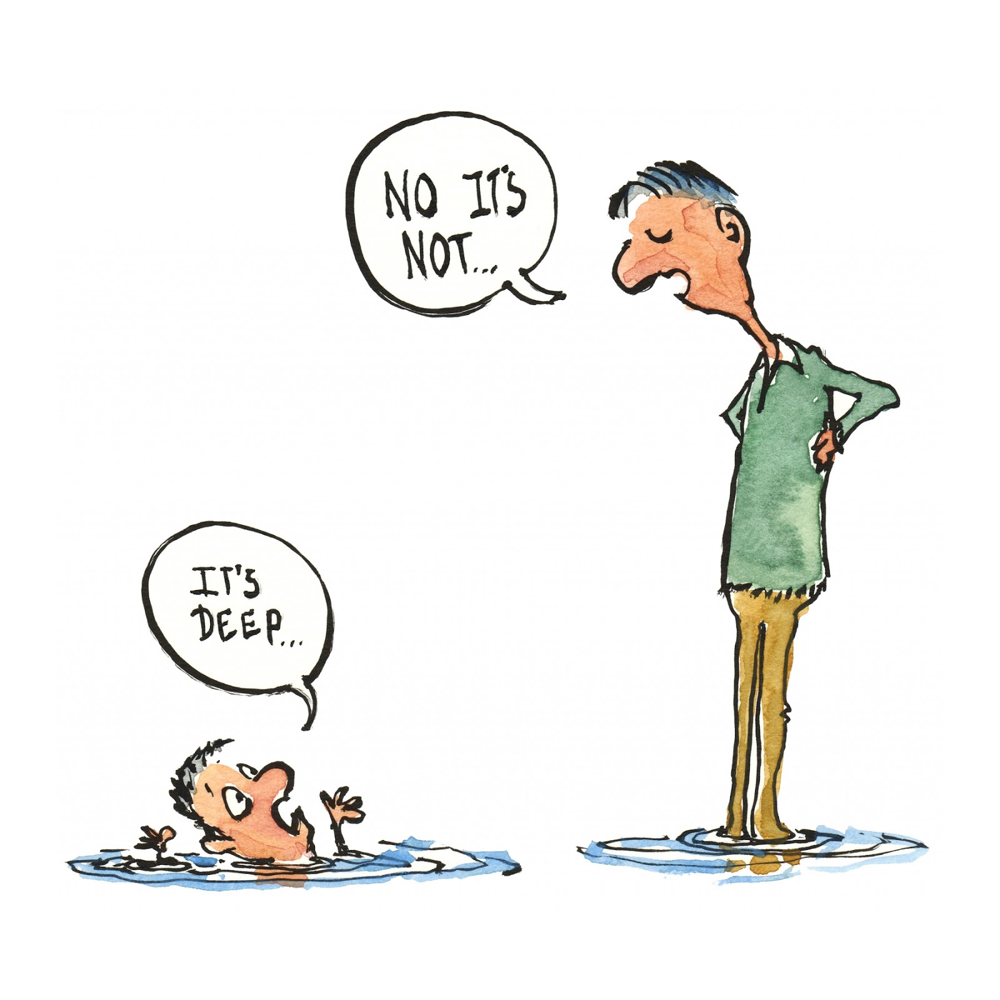
Image Source: https://hikingartist.files.wordpress.com/2015/04/perspectives-deep-water-square.jpg
WebRTC Demos and Samples
- Google: https://webrtc.github.io/samples/
- Mozilla: https://mozilla.github.io/webrtc-landing/
- Muaz Kahn: https://www.webrtc-experiment.com/
Learn more about related API-s
GetUserMedia API
- W3C: https://www.w3.org/TR/mediacapture-streams/
- Mozilla Developers: developer.mozilla.org/en-US/docs/Web/API/MediaDevices/getUserMedia
WebRTC API
- W3C: www.w3.org/TR/webrtc/
- Mozilla Developers: developer.mozilla.org/en-US/docs/Web/API/RTCPeerConnection
WebAudio API
- W3C: www.w3.org/TR/webaudio/
- Mozilla Developers: developer.mozilla.org/en-US/docs/Web/API/Web_Audio_API
MediaStream Recorder API
- W3C: www.w3.org/TR/mediastream-recording/
- Mozilla Developers: developer.mozilla.org/en-US/docs/Web/API/MediaRecorder/MediaRecorder
Media Capture from DOM Elements API
- W3C: www.w3.org/TR/mediacapture-fromelement/
- Mozilla Developers: developer.mozilla.org/en-US/docs/Web/API/CanvasCaptureMediaStream
Audio Output Devices API
Acknowledgements
The author would like to thank
- Luca De Cicco
- Håvar Aambø Fosstveit
- Damien FETIS
- Bartlomiej Idzikowski
- Csaba Bozóky
- Zoltán Kerekes
- János Kukk
- Péter Szabó
- László Szeder
- Sándor Petőh
- Szilárd Varga
for doing several reviews on the various revisions of this codelab.
Thanks & Questions..
If you find any bug or have any comment don't hesitate to open an issue here: https://github.com/misi/codelab/issues/new
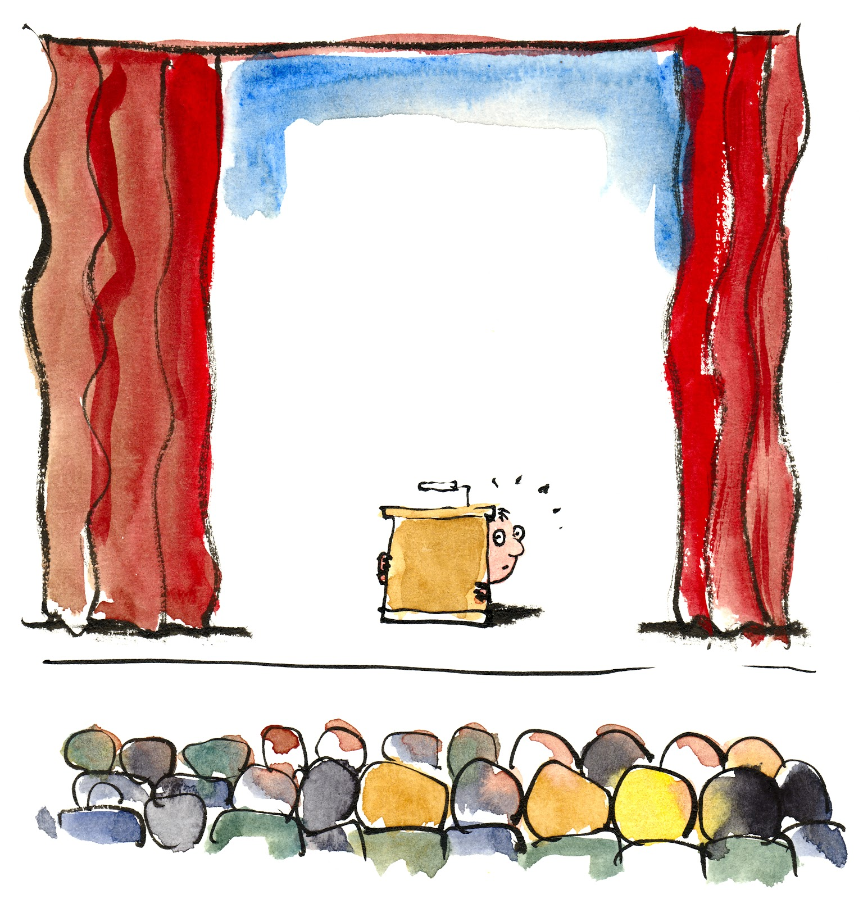
Image Source: http://art.fritsahlefeldt.com/photo/1732/Scared-of-speaking-Color-illustration.html
Firefox:
about:webrtc
Open the URL above to see the under the hood informations about the MediaStreams and PeerConnections
Debug and Trace
export NSPR_LOG_FILE=/home/ehugg/tmp/nspr.log export NSPR_LOG_MODULES=signaling:5,mtransport:5,timestamp:1 export R_LOG_LEVEL=9 export R_LOG_DESTINATION=stderr
ICE media log:
For ICE/STUN/TURN:
- Set R_LOG_DESTINATION=stderr
- Set R_LOG_LEVEL=3 (can be anything between 1 and 9)
- Set R_LOG_VERBOSE=1 if you want to include the module name generating the message
For "signaling" (SDP offer/answer handling) and media transport, we use the normal Mozilla logging infrastructure, which uses a comma-separated list of modules, each one with its indicated log level; for WebRTC, you'll be most interested in these:
- Set NSPR_LOG_MODULES=signaling:5,mtransport:5
- You can also add ",timestamp:1" to that list if you want each log message to include timestamps.
Debug Chrome
chrome://webrtc-internals
Open the URL above to see the under the hood informations about the MediaStreams and PeerConnections
Debug and Trace
google-chrome --enable-logging=stderr --v=4 --vmodule=*libjingle/*=9 --vmodule=*media/*=9
linux log file: .config/chromium/chrome_debug.log
Basic info: https://www.chromium.org/for-testers/enable-logging
- a)
--vmodule=*source*/talk/*=3 - b)
--vmodule=*third_party/libjingle/*=3 - c)
--vmodule=*libjingle/source/talk/*=3
--enable-logging=stderr --log-level=3 --vmodule=*libjingle/*=3,*=0